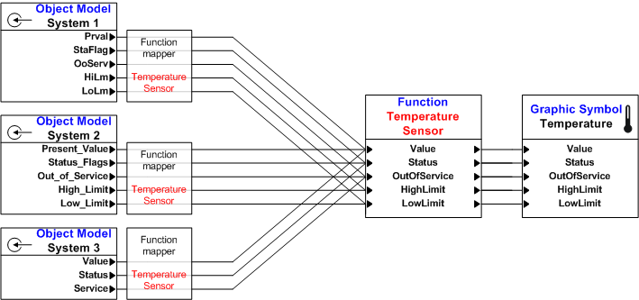
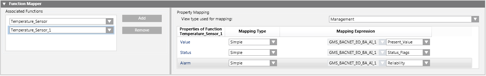
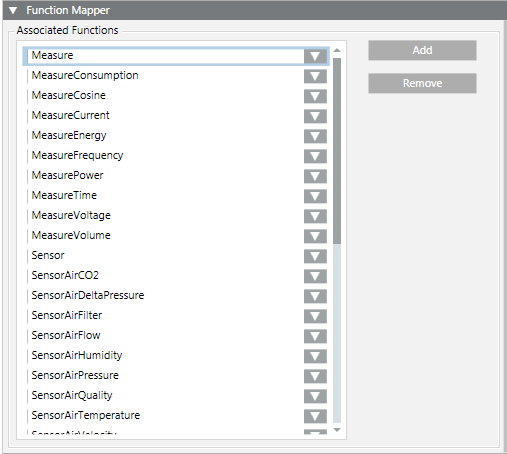

Mapping Functions to Object Models
In the Models & Functions tab, the Function Mapper allows you to define which functions are associated with a particular object model. For example, you might have object models for three different devices, as represented in the figure, that must all be mapped to the 'temperature sensor' function. Doing so allows the varying properties defined in each object model to be mapped to consistent properties defined within the function. For background information see Function Mapper Expander.

- The required functions have been created and configured.
- In System Browser, select Project > System Settings > Libraries > [...] > [object model].
- In the Models & Functions tab, open the Function Mapper expander.
- Under Associated Functions, click Add.
- From the drop-down list, select the function you want to assign to this object model.
- The properties of that function display in the Property Mapping group box on the right.
NOTE: You can also drag-and-drop functions from System Browser into Associated Functions. - From the View type used for mapping drop-down list, select the System Browser view to use.
NOTE: Always use the same mapping view within a system. Otherwise, you may not be able to map the objects. - For each property of the selected function, select the Mapping Type to use:
- Simple (Function properties mapping to object model properties)
- Functional (mapping children together with Functions)
- Extended (mapping children together with path and object model properties)
- Mixed (mapping children together with path and Functions)
- For each property, also configure the Mapping Expression to use. Depending on the selected Mapping Type, this may include:
- Function used for mapping
- Object mode property used for mapping
- Mapping path to a child
NOTE: For more information about Mapping Type and Mapping Expression, see Function Mapper Expander. - Repeat steps 3 to 7 for all functions you want to assign to this object model.
- Click Save
 .
.

